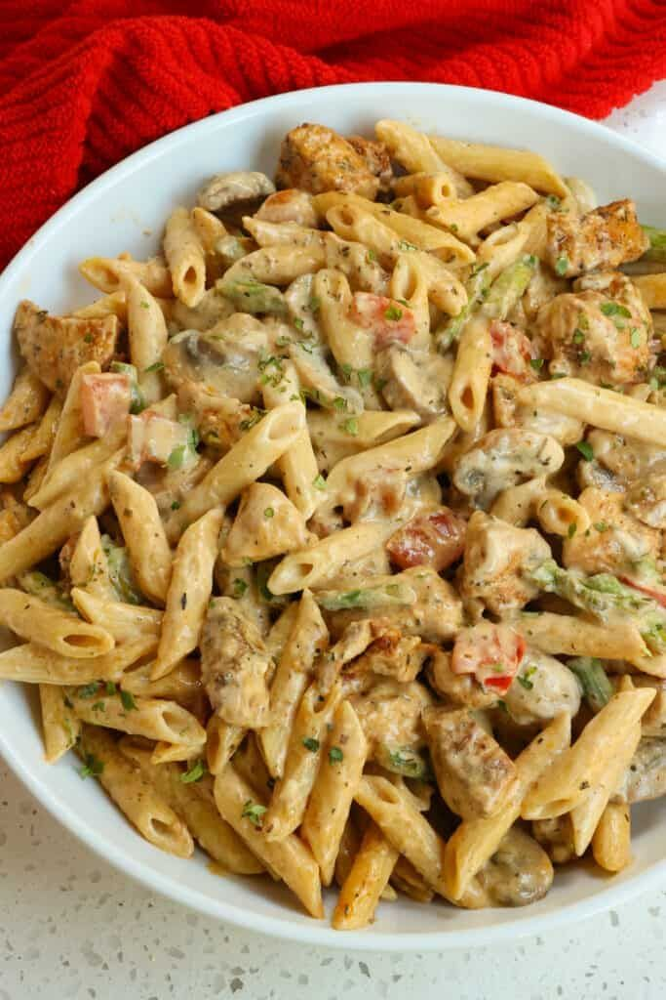

My Favorite Recipe
Cajun Creamy Pasta
Ingredients
- Pasta
- Cajun Seasoning
- Heavy Cream
- Chicken
- Parmesan Cheese
- Butter
- Garlic
- Salt
- Pepper
- Parsley
- Flour
- Chicken Broth
- Spicy Pepper
Instructions
- Season and flour chicken
- Cook chicken in a pan until done, then set aside
- Cook pasta according to package instructions
- In the same pan, melt butter and add garlic, cook until fragrant
- Add flour to make a roux, cook for 1-2 minutes
- Slowly whisk in chicken broth and heavy cream, cook until thickened
- Add Cajun seasoning, salt, and pepper to taste
- Add Parmesan cheese and stir until melted
- Add cooked pasta and chicken to the sauce, toss to combine
- Garnish with parsley and serve